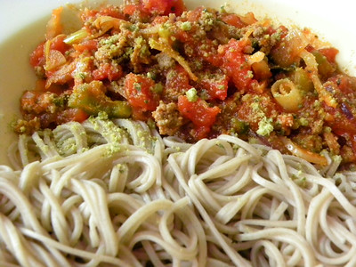

Baked Spaghetti

Description
This recipe is slightly different from the usual spaghetti recipes. After you assemble the ingredients, you bake them in a pan for 30 minutes.
Some might call this a casserole but I prefer to call it a baked spaghetti dish.
Ingredients
- cooking spray
- 12 ounces uncooked spaghetti
- 1 (8 ounce) package cream cheese, softened
- 1 (8 ounce) container sour cream
- 2 cups shredded part skim mozzarella cheese, divided
- 2 tablespoons olive oil
- 1 1/2 pounds ground sirloin
- 1/2 cup chopped yellow onion
- 2 teaspoons finely chopped garlic
- 2 teaspoons italian seasoning
- 1 teaspoon kosher salt
- 1/2 teaspoon ground black pepper
- 2 (24 ounce) jars spaghetti or marinara sauce
- 1/4 cup Parmesan cheese
Steps
- Preheat oven to 350 degrees F (175 degrees C). Spray a 9x13 inch baking dish with cooking spray; set aside. Gather ingredients together.
- Boil spaghetti in generously salted water, about 8 to 10 minutes, until its still firm. Drain and set aside.
- While pasta cooks, stir together cream cheese, sour cream, and 1 cup of mozzarella cheese until combined. Set aside.
- Heat olive oil in a large skillet over medium-high heat. Add ground sirloin in large chunks. Cook sirloin undisturbed until slightly browned about two minutes.
- Add onion, garlic, italian seasoning, salt, and pepper. With a wooden spoon, break up meat into smaller pieces and stir occasionally for about three minutes until almost cooked through.
- Remove pan from heat and tilt to pool grease on the side. Use a large spoon to remove excess grease from the pan.
- Add marinara to the beef mixture and stir until combined. Add reserved spaghetti. Fold and stir until spaghetti is evenly coated in sauce.
- Transfer 1/2 of the pasta mixture into the prepared baking dish. Spread sour cream mixture over the pasta in the baking dish. Top with remaining pasta mixture.
- Sprinkle remaining 1 cup of mozzarella cheese over the top. Cover loosely with aluminum foil and place baking dish on a baking sheet.
- Bake in the preheated oven until cheese is melted and bubbly, about 30 minutes. Remove aluminum foil and sprinkle top with Parmesan cheese. Increase oven temperature to broil.
- Broil for 3 to 4 minutes until cheese has started to turn golden brown. Remove from oven and let stand for 5 minutes before serving.
Home